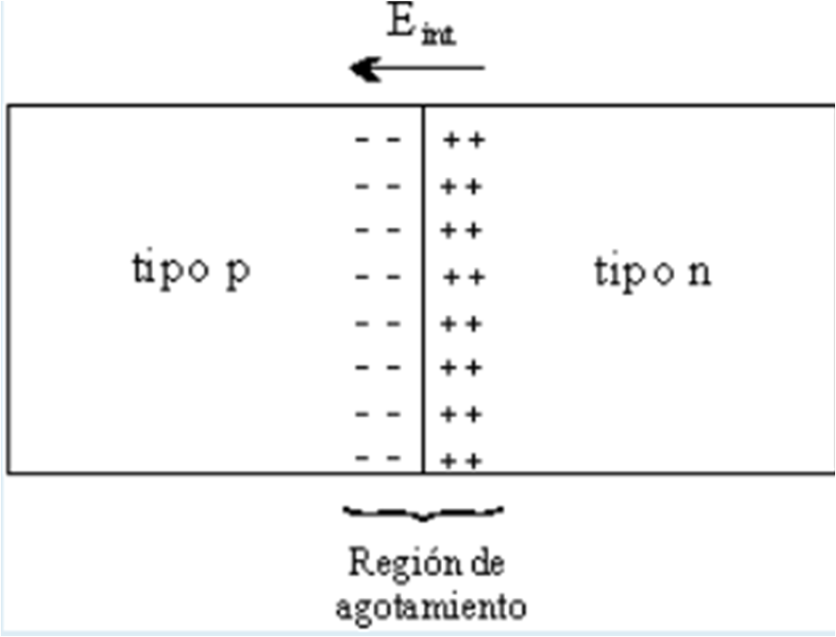

Los semiconductores son elementos que tienen una conductividad eléctrica inferior a la de un
conductor metálico pero superior a la de un buen aislante. El semiconductor más utilizado es el silicio,
que es el elemento más abundante en la naturaleza, después del oxígeno. Otros semiconductores son el germanio y el selenio.
Tipos de semiconductores
Semiconductores intrínsecos
poseen una poseen una
conductividad el conductividad eléctrica f ctrica fácilmente controlable y, al combinarlos cilmente controlable y, al combinarloscorrectamente, pueden actuar como interruptores, amplificadores o dispositivos de almacenamiento. Ejemplo: Si y Ge puros.
Semiconductores extrínsecos
Estos se forman al estos se forman al agregar, intencionadamente, a un semiconductor intr a un semiconductor intrínseco
sustancias dopantes.
Union P-N
Antes de definir a una unión p-n, es conveniente
mencionar que un semiconductor intrínseco es un material
formado por un solo tipo de átomos o de elementos
químicos, con una cantidad insignificante de
impurezas. Mientras que un semiconductor extrínseco
es un material al cual se le han agregado átomos de
otro elemento químico con una cantidad diferente de
electrones de valencia. Así, un semiconductor tipo n
tiene átomos de impureza con una cantidad mayor de
electrones de valencia y estos átomos aportan electrones
a la banda de conducción. En un semiconductor
tipo p los átomos de impureza tienen una cantidad menor
de electrones de valencia y aportan huecos a la
banda de valencia.
Ahora bien, a la unión entre dos regiones de un material
semiconductor contaminadas con diferentes impurezas,
es decir, una región tipo p y otra región tipo n,
se le denomina unión p-n. A temperatura de 0º K, los electrones donadores de la región n y los huecos de la región p se encuentran unidos a sus átomos.
Al incrementarse la temperatura se liberan algunos electrones y huecos de sus átomos de impureza y se crean portadores libres que forman una corriente de difusión, los electrones de la región n se desplazan hacia la región p y viceversa. Este flujo de portadores crea iones positivos en la región n y negativos en la región p, formándose un campo eléctrico en la unión. Este campo eléctrico se opone a la difusión
de más portadores y se genera en la unión una delgada
región de agotamiento de portadores libres, como se muestra en la figura.

El campo eléctrico formado en la unión establece
un potencial interno Vint entre las dos regiones que provoca el desalineamiento de sus bandas de energía.
Mientras mayor sea la concentración de impurezas y la
temperatura, mayor será el potencial interno y el desalineamiento de las bandas. Sin embargo, ya que el nivel
de Fermi es una variable termodinámica, en estas condiciones de equilibrio térmico tal nivel de Fermi se
mantiene constante a través de la unión.
Al polarizar directamente la unión p-n se reduce el
potencial interno Vint y debido a que se pierde el equilibrio ya no se habla de un nivel de Fermi, sino de un cuasi nivel de Fermi, separándose cada uno de los niveles
en proporción al potencial externo aplicado [Peyghambarian,
1993]. Si el potencial externo aplicado es tal que el potencial interno no puede evitar que los portadores mayoritarios crucen la unión, estos portadores se inyectan a la unión y se establece un flujo de corriente.
Por otro lado, al polarizar inversamente la unión pn,
el potencial interno se incrementa y evita el flujo de
corriente.